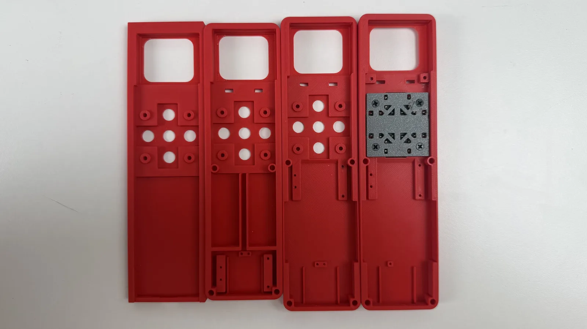

Denchik
RU
☾
← all notes
25.08.2026
#slider #electronics #3d-printing
A few iterations of the remote's case. It's actually already basically assembled, and getting refined further.

Comments
Comments